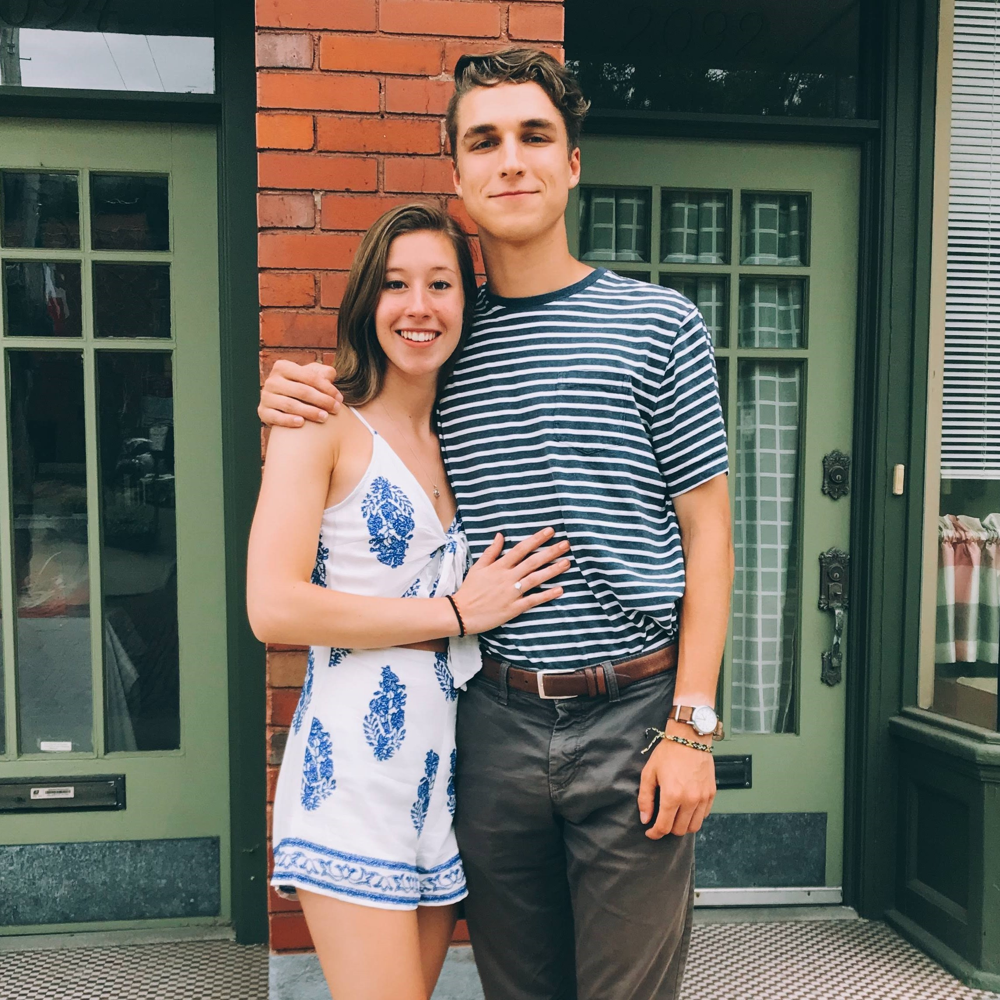

Introduction:
Pennsylvania native studying Computer Science Engineering at The Ohio State University. Originally from the small, historic town of Gettysburg. 
Education:
My studies at Ohio State have focused mainly on learning the fundamental concepts of computer science. These include object-oriented programming techniques, data structures, proper documentation, low-level programming, version control techniques, automated testing, and efficient algorithm design. The CSE department at Ohio State produces students who can ground-up build applications and systems that are easily maintained, well organized, and self-explanatory. Outside of my studies in the computer science department, Statistics has been a significant portion of my education at Ohio State. I have taken statistics courses covering inference and testing, spatial statistical methods, non-parametric testing, regression, dimensionality-reduction, and feature extraction. In my free time, I enjoy developing my front-end development skills, both in web and standalone application use cases. Building instantly comfortable and self-guiding interfaces is central to my software development process. Because I like to consider myself and engineer first, learning about software development strategies is also important to me. I hope to put to practice techniques relating to Agile development, such as the scrum system, in an attempt to find the best solution to the problem of effectively completing development processes.Personal:
The middle child of three boys, I grew up around farms and orchards in rural southern PA. Few things are as important to me as spending time alone outside. I enjoy long distance running and will nerd out over ultralight backpacking gear for hours (check out my lighterpack). Aside from walking and running in the woods, music has been a long-term passion of mine, beginning with guitar. After studying classical guitar for several years, among other instruments such as cello and piano, I have branched out into many different genres. From experimental hip hop to American Primitive Guitar (Listen!) and modal jazz, I will play or listen to just about anything. Other hobbies of mine include drawing and painting, searching for the ultimate apple cider (it's from Oyler's Organics in Biglerville, PA), and looking at maps.